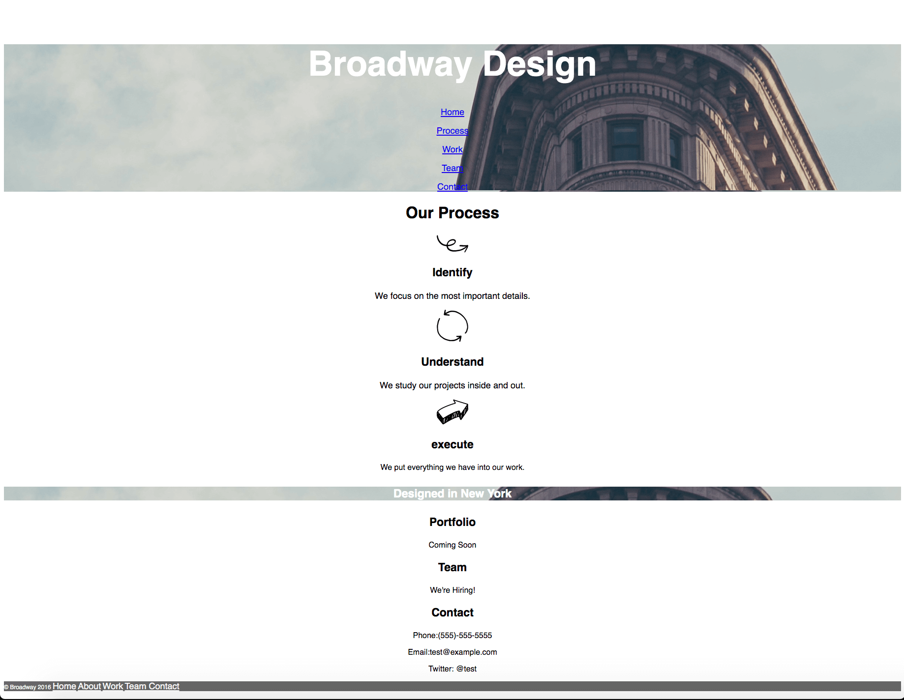
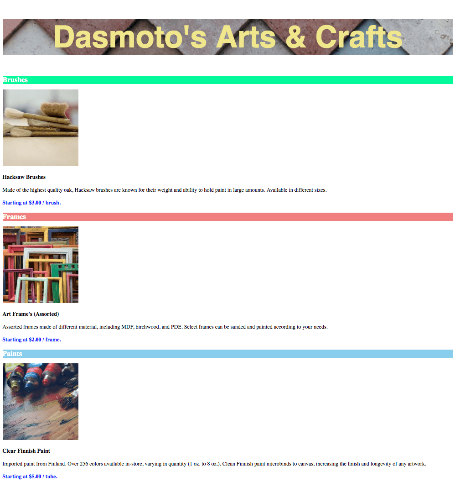

(Click on the project to see it on guthub!)
1. Ruby Terminal App, created with Lelani at Coder Academy
April, 2019)

2. Excursion website, created individually with media provided by codecademy.
(March, 2019)
3. Broadway website, created individually with media provided by codecademy.
(March, 2019)
4. Damoto's Art website, created individually with media, font and colour specifications provided by coder academy.
(March, 2019)
